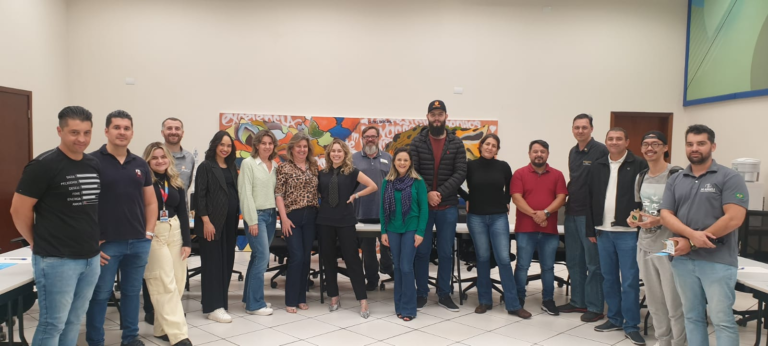
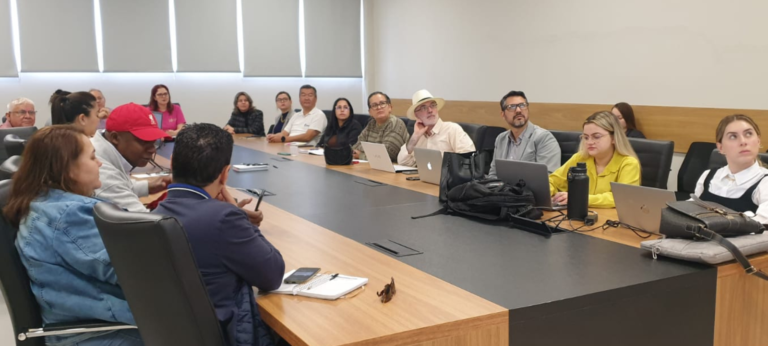
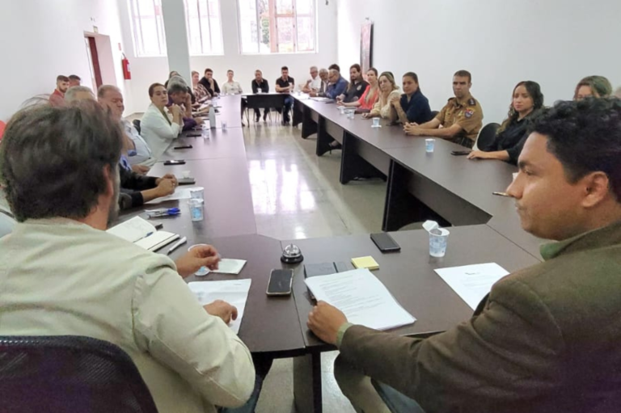
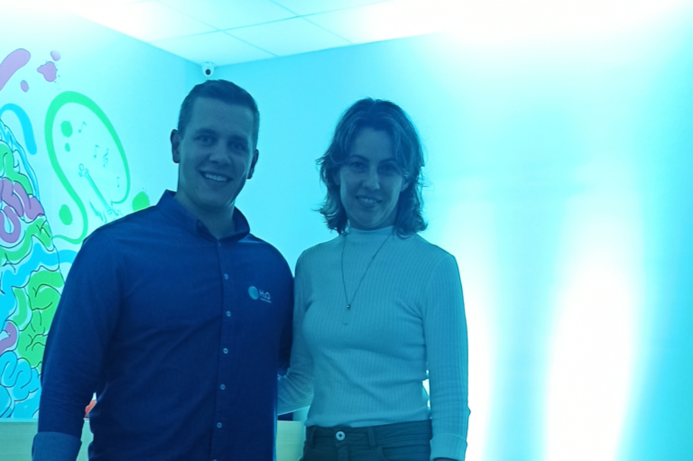

Diretora do ITAI, Profª. Dra. Alessandra Bussador, participa de reunião realizada pelo SEBRAE
Em representação ao Instituto de Tecnologia Aplicada e Inovação – ITAI, a Diretora de Programas e Projetos, Profª. Dra. Alessandra Bussador, esteve presente na última quarta-feira (10/05) no TALK sobre como os negócios “não-turísticos” podem melhorar a experiência de quem…

ITAI participa da reunião do Iguassu Valey
Na última terça-feira (09/05), a Diretora de Programas e Projetos, Profª. Dra. Alessandra Bussador, participou da reunião do Iguassu Valey. O encontro teve como objetivo, apresentar as ações que acontecerão no “Summit Iguassu Valley”, um evento repleto de inovação, tecnologia e muito…

Oficialmente, o ITAI passou a fazer parte do quadro de conselheiros do COMTUR
Na última quinta-feira (04/05), a Diretora de Programa e Projetos, Profª. Dra. Alessandra Bussador, e a Colaboradora, Elida Suellen dos Santos, estiveram presentes na Reunião Ordinária do Conselho Municipal de Turismo – COMTUR, em representação ao Instituto de Tecnologia e…

ITAI participa do lançamento da H20 Innovation Brasil, em Foz do Iguaçu
Em representação ao Instituto de Tecnologia Aplicada e Inovação – ITAI, a Diretora de Programa e Projetos, Profª. Dra. Alessandra Bussador, esteve presente na última quinta-feira (04/05) no lançamento da H20 Innovation Brasil, que aconteceu na Associação Comercial e Empresarial…